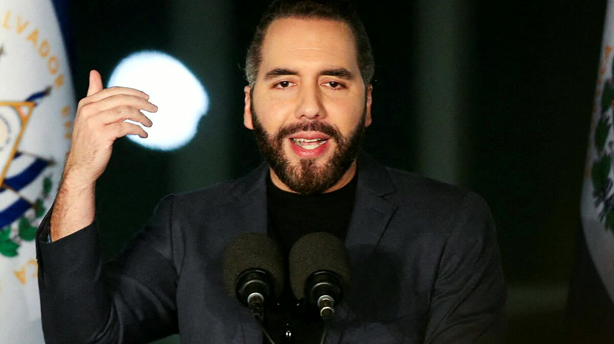

Lima, 14 de agosto de 2026 — En un encendido discurso pronunciado en el corazón del distrito más poblado de Lima Metropolitana, la candidata presidencial de Fuerza Popular, Keiko Fujimori, anunció este viernes que, de llegar a la presidencia, aplicará en el Perú el denominado "modelo Bukele" de seguridad ciudadana, basado en la mano dura contra el crimen organizado, la militarización de las calles y la construcción de una megacárcel de máxima seguridad inspirada en el Centro de Confinamiento del Terrorismo (CECOT) de El Salvador.
"No podemos seguir permitiendo que los delincuentes tomen nuestras calles, que las extorsiones asfixien a nuestros comerciantes y que el narcotráfico se apodere de nuestros pueblos jóvenes. Vamos a aplicar el modelo que ha devuelto la paz a El Salvador: firmeza, cero impunidad y justicia sin titubeos", manifestó la lideresa fujimorista ante miles de simpatizantes que coreaban consignas como "Keiko, Keiko" y "mano dura contra la delincuencia".
La propuesta, que forma parte del plan de gobierno de Fuerza Popular para el periodo 2026-2031, ha generado una ola de reacciones encontradas en el espectro político y social peruano. Mientras sectores conservadores y empresariales aplauden la iniciativa, organizaciones de derechos humanos y sectores progresistas advierten sobre el riesgo de una "deriva autoritaria" y la vulneración de garantías fundamentales.
Los pilares del "plan Bukele" peruano
Durante su intervención, que se extendió por más de 45 minutos, Keiko Fujimori detalló los cinco ejes principales de su estrategia de seguridad, inspirada directamente en las políticas implementadas por el presidente de El Salvador, Nayib Bukele, desde 2019.
El primer pilar, explicó, consiste en la declaratoria de emergencia en los distritos con mayor incidencia delictiva, facultando a las Fuerzas Armadas a realizar patrullajes conjuntos con la Policía Nacional. "No se trata de una medida temporal; es una estrategia permanente hasta que recuperemos el control total del territorio", enfatizó.
El segundo eje contempla la construcción de una megacárcel de máxima seguridad en la provincia de Cañete, con capacidad para albergar a más de 10.000 internos de alta peligrosidad. "Así como Bukele construyó el CECOT, nosotros levantaremos el 'Centro de Reinserción y Orden Nacional' (CRON), un penal que será un ejemplo en América Latina por su tecnología y su régimen disciplinario severo", aseguró.

El tercer pilar es la creación de un "Régimen de Excepción" que permita al Ejecutivo disponer de facultades extraordinarias para intervenir comunicaciones, realizar detenciones preventivas y extender los plazos de prisión preventiva en casos de crimen organizado. "Cuando hay una amenaza real a la seguridad nacional, el Estado no puede atarse las manos. Necesitamos herramientas legales que nos permitan actuar con rapidez y contundencia", justificó la candidata.
En cuarto lugar, Fujimori anunció la creación de un sistema de inteligencia ciudadana que fomente la denuncia anónima mediante una aplicación móvil, con recompensas económicas para quienes aporten información que conduzca a la captura de cabecillas criminales. "Queremos que el ciudadano sea un aliado activo en la lucha contra la delincuencia, no un espectador pasivo", sostuvo.
Finalmente, la quinta medida consiste en un plan de inversión en equipamiento y tecnología para la Policía Nacional, que incluye la adquisición de drones, sistemas de reconocimiento facial y un centro de monitoreo satelital. "La tecnología es nuestra mejor aliada para anticiparnos al delito y desarticular las redes criminales antes de que actúen", puntualizó.
"El modelo Bukele ha demostrado que es posible reducir los homicidios y las extorsiones en un 80% en menos de cinco años. ¿Por qué no habríamos de replicarlo en el Perú?" — Keiko Fujimori, durante su mitin en San Juan de Lurgancho
Reacciones en el mundo político
El anuncio de Fujimori no tardó en generar reacciones encontradas. El actual ministro del Interior, Jorge Vásquez, señaló desde el Palacio de Gobierno que "el Perú no necesita copiar modelos extranjeros, sino fortalecer sus propias instituciones" y advirtió que cualquier medida que implique una militarización de la seguridad ciudadana debe ser evaluada con "extremo cuidado" para no afectar los derechos humanos.
Por su parte, la vocera de la bancada de izquierda, Maribel Espinoza, calificó la propuesta como "peligrosa y populista". "Lo que Keiko Fujimori está proponiendo es un régimen de excepción disfrazado de política de seguridad. Eso ya lo vivimos en los años 90 con el gobierno de su padre, y no queremos repetir esa historia de violaciones a los derechos humanos", declaró en conferencia de prensa.
Sin embargo, el alcalde de San Juan de Lurigancho, Carlos Arce, quien asistió al mitin como invitado especial, respaldó abiertamente la iniciativa. "Nuestro distrito es uno de los más afectados por la inseguridad. Necesitamos acciones concretas, no discursos vacíos. Si el modelo Bukele funcionó en El Salvador, ¿por qué no va a funcionar aquí?", afirmó.
El economista y analista político Hugo Otero, en declaraciones a este diario, señaló que "el éxito del modelo Bukele en El Salvador no puede trasplantarse mecánicamente al Perú sin considerar las diferencias estructurales. La geografía, la dimensión del narcotráfico, la presencia de minería ilegal y la debilidad institucional son factores que hacen inviable una copia literal".
El factor internacional y las críticas de organismos de derechos humanos
La propuesta de Fujimori también ha despertado el interés de la comunidad internacional. La oficina en Lima de la Comisión Interamericana de Derechos Humanos (CIDH) emitió un comunicado en el que insta al Estado peruano a "garantizar que cualquier política de seguridad se enmarque en el respeto irrestricto de los derechos humanos y el debido proceso".
El secretario general de la Organización de Estados Americanos (OEA), Luis Almagro, evitó pronunciarse directamente sobre el anuncio, pero recordó que "las soluciones mágicas no existen en materia de seguridad. La lucha contra el crimen requiere inversión social, prevención y fortalecimiento institucional".
En El Salvador, el presidente Nayib Bukele, a través de su cuenta oficial de X (antes Twitter), publicó un breve mensaje en español: "Cada país tiene su propia realidad, pero el principio es el mismo: cuando el Estado actúa con firmeza, el crimen retrocede. Mucho éxito a la hermana nación peruana". El tuit fue interpretado como un respaldo implícito a la candidata fujimorista.
¿Realidad o estrategia electoral?
Analistas políticos consultados por este diario coinciden en que el anuncio de Keiko Fujimori responde a una estrategia de posicionamiento electoral de cara a las elecciones generales de 2026. "La inseguridad ciudadana es el principal problema que perciben los peruanos, según todas las encuestas. Al presentarse como la candidata de la 'mano dura', Fujimori busca capitalizar el descontento popular y diferenciarse de otros candidatos que proponen enfoques más matizados", explicó la politóloga Carolina Ruiz.
Sin embargo, Ruiz advirtió que "el riesgo de sobredimensionar las promesas es alto. La ciudadanía espera resultados concretos, y si Fujimori llega al poder y no cumple con lo anunciado, podría generar una enorme frustración y desconfianza en el sistema político".
Por su parte, el sociólogo y experto en seguridad, Rafael Merino, señaló que "el modelo Bukele no solo se basa en la represión, sino también en una fuerte inversión en infraestructura y en un cambio cultural profundo. En el Perú, sin un plan integral que aborde las causas estructurales de la violencia, cualquier medida represiva será solo un parche que no resolverá el problema de fondo".
Merino agregó que "la experiencia salvadoreña muestra que las tasas de homicidios descendieron drásticamente, pero también hay denuncias de detenciones arbitrarias, hacinamiento y condiciones inhumanas en las cárceles. ¿Estamos dispuestos a pagar ese costo en el Perú?"
La percepción ciudadana en las calles
Este diario recorrió diversas zonas de Lima Metropolitana para recoger la opinión de los ciudadanos tras el anuncio de Fujimori. En el Mercado Mayorista de La Victoria, los comerciantes mostraron un apoyo mayoritario a la propuesta de mano dura. "Estamos hartos de que nos cobren cupos, de que maten a nuestros compañeros. Si Keiko promete acabar con eso, yo voto por ella", declaró doña Rosa Quispe, vendedora de abarrotes.
En contraste, en el distrito de Barranco, un grupo de jóvenes universitarios expresó su rechazo a lo que consideran "una solución autoritaria". "No queremos vivir en un estado policial. La seguridad no se construye con miedo, sino con educación, oportunidades y justicia social", afirmó Camila Torres, estudiante de sociología.
La encuestadora Ipsos Perú publicó esta mañana un sondeo rápido en el que el 58% de los encuestados manifestó estar "de acuerdo" o "muy de acuerdo" con la implementación de un modelo similar al de Bukele en el Perú, mientras que el 32% se mostró en contra y el 10% indeciso. La misma encuesta reveló que la inseguridad ciudadana es el principal problema que aqueja a los peruanos, por encima de la corrupción y el desempleo.
Los desafíos prácticos de la implementación
Más allá del debate político, los especialistas en gestión pública señalan que la implementación del modelo Bukele en el Perú enfrentaría serios obstáculos prácticos. El primero de ellos es el presupuestal: construir una megacárcel como la propuesta por Fujimori requeriría una inversión de al menos 1.500 millones de soles, además del costo operativo anual que superaría los 300 millones de soles.
El segundo desafío es el legal. El régimen de excepción propuesto por Fujimori chocaría con el artículo 137 de la Constitución Política del Perú, que regula los estados de excepción y exige la aprobación del Congreso, así como el respeto a los derechos fundamentales. Cualquier modificación constitucional requeriría de una mayoría calificada en el Parlamento.
El tercer desafío es el institucional. La Policía Nacional del Perú atraviesa por una crisis de liderazgo, corrupción interna y falta de recursos. Sin una reforma profunda de la institución, cualquier estrategia de seguridad está condenada al fracaso, advierten los expertos.
Finalmente, el factor social es quizás el más complejo. La pobreza, la desigualdad y la exclusión social son caldos de cultivo para la violencia. "No se puede combatir el crimen solo con policías y cárceles. Se necesita inversión en educación, salud y empleo. Ese es el verdadero desafío", sentenció el economista Otero.
Conclusión: un debate que recién comienza
El anuncio de Keiko Fujimori ha abierto un debate crucial sobre el rumbo que debe tomar el Perú en materia de seguridad ciudadana. Mientras sus partidarios ven en el modelo Bukele la solución definitiva a la violencia que asola el país, sus detractores alertan sobre los riesgos de una deriva autoritaria y la vulneración de derechos humanos.
Lo que está claro es que la inseguridad ciudadana se ha convertido en el tema central de la campaña electoral de 2026, y todos los candidatos están obligados a presentar propuestas concretas y viables. El desafío para Fujimori será demostrar que su plan no es solo una promesa electoral, sino una política de Estado con sustento técnico y financiero.
Este diario continuará siguiendo de cerca el desarrollo de esta propuesta y sus implicancias para el futuro del país. Mientras tanto, los peruanos esperan respuestas y soluciones a un problema que afecta su día a día y que, en palabras de la propia candidata, "no admite más demoras ni medias tintas".
Informes adicionales: Redacción Política · Colaboración: Agencia Andina, IPSOS Perú.